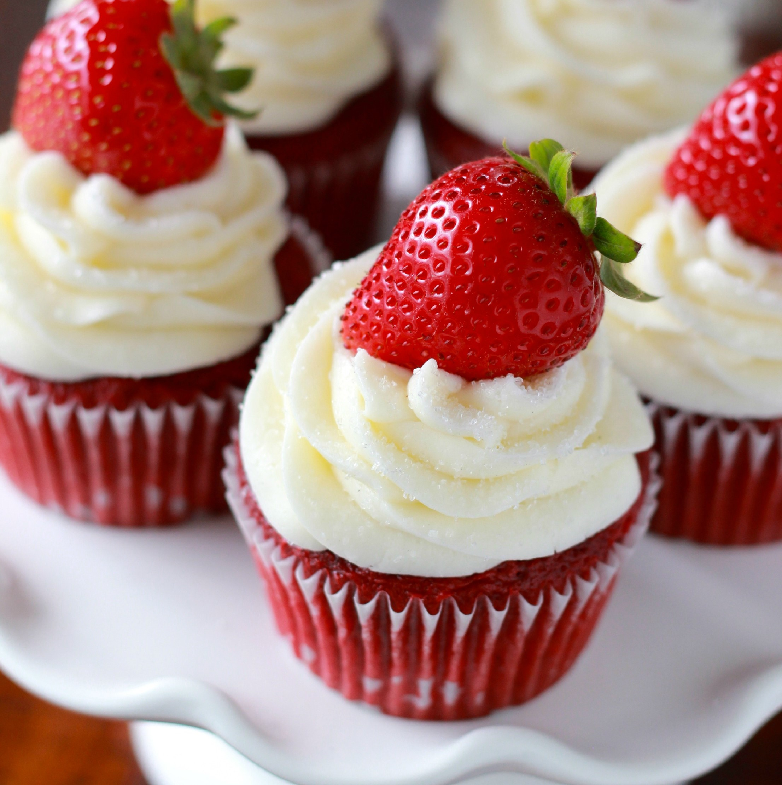

Cupcakes

Ingredientes
- 1 Paquete Harina para preparar pastel de vainilla, para cupcakes, (500 g)
- 3 Piezas Huevo para cupcakes
- 1 Lata Leche Evaporada CARNATION® CLAVEL® para cupcakes
- 1/3 Taza Aceite de maíz para cupcakes
- 1 Lata Leche Condensada LA LECHERA® para el betún
- 1 Paquete Queso crema (190 g), para el betún
- 1 1/2 Taza Azúcar glass para el betún
- 150 Gramos Granillo de colores para el betún
- 100 Gramos Granillo de colores
Cómo hacer Cupcakes:
- Horno precalentado a 200 °C.
- Para los cupcakes, bate la harina con los huevos, la Leche Evaporada CARNATION® CLAVEL® y el aceite; hasta integrar todo.
En moldes para mantecadas coloca los capacillos y llénalos hasta ¾ partes con la mezcla.
- Hornea a 200 °C por 45 minutos o hasta que al introducir un palillo de madera este salga limpio.
Retira del horno y deja enfriar.
- Para el betún, bate la Leche Condensada LA LECHERITA® con el queso crema y el azúcar glass hasta que se integre perfectamente.
Presentación
- Decora la superficie de tus cupcakes con el betún y granillo de colores.
- Extras: capacillos para cupcakes.